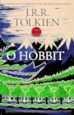

O HOBBIT
Editora: HarperCollins Brasil
Capa: Brochura
Autor: J.R.R. Tolkien
Páginas: 336 Páginas

SENHOR DOS ANÉIS:
A SOCIEDADE DO ANÉL
Editora: HarperCollins Brasil
Capa: Dura
Autor: J.R.R. Tolkien
Páginas: 608

SENHOR DOS ANÉIS:
AS DUAS TORRES
Editora: HarperCollins Brasil
Capa: Dura
Autor: J.R.R. Tolkien
Páginas: 464 Páginas

SENHOR DOS ANÉIS:
O RETORNO DO REI
Editora: HarperCollins Brasil
Capa: Dura
Autor: J.R.R. Tolkien
Páginas: 528 Páginas